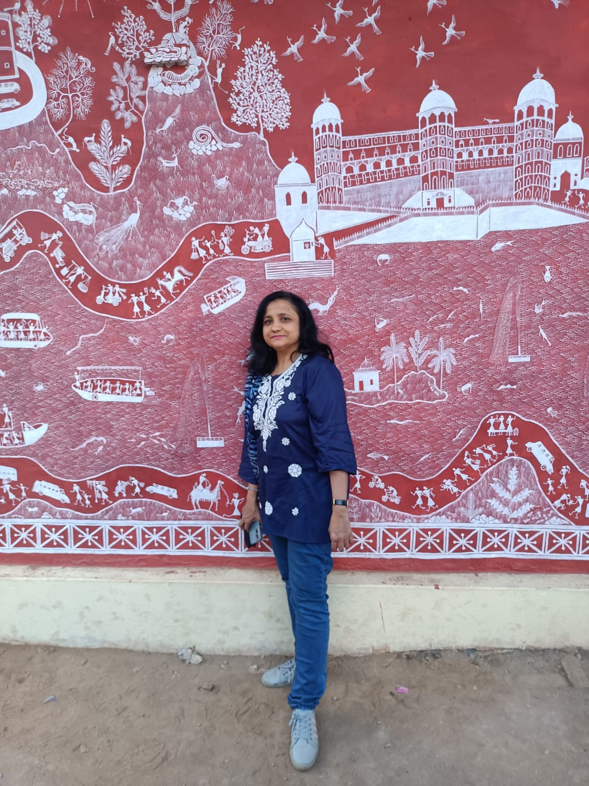

Yasmeen Chandan
My Guardian Angel...

All mothers give warmth and protection to their kids, but mine gave me wings to fly !
- 1977 : She was born on 28th June 1977 in Udaipur, Rajasthan to Hamida Banu and Qutubuddin Oda in a merchant family of Dawoodi Boharas.
- 1995 : When she turned 18, she started preparing for AIPMT which is the entrance exam for doctors. Belonging to a conservative family, her failure in the examination ruined her prospects of becoming a doctor. Yet, she did not give up on her education and went on to pursue Bachelor's in Sciences with majors in Biology at Mohanlal Sukhadia University , Udaipur.
- 1998 : After completing her undergraduate program, she went on to pursue a Master's degree in sciences with majors in Zoology.
- 2001 : After two years of engagement, she was married to an ambitious computer programmer named Shabbir Hussain Chandan working in Kuwait. The marriage was arranged by the elder's of the family.
- 2003 : After two years of her marriage, a tragic incident lead to her miscarriage. Yasmeen was heartbroken but was supported by her kind and loving father-in-law Hasan Ali Chandan .
- 2004 : She gave birth to her first child, a son named Ali Asgar. As a result of her initial miscarriage, she got too attached to the child and the fear of loss kept hovering her mind . She grew cautious of her child's well-being.
- 2009 : Yasmeen began working as a Biology lecturer in a private institution after her son turned five. Her in-laws supperted her ambition.
- 2011 : She gave birth to her second child, a daughter she describes 'A blessing of the moon princess' ie. Hussaina Chandan. She resigned from her job in order to take care of her newborn. The Chandanwala as well as Odawala family welcomed the child and showered her with all the blessings and love but Yasmeen's happiness was short-lived. In August of the following year, she lost her dear father to cancer. She was struck with immense grief. Her husband and father-in-law supported her during the lows.
- 2012 : Tragedy struck the Chandanwala family as they mourned the death of Mr. Hasan Ali Chandan, the guarding beacon of the Chandanwalas. Yasmeen was devastated at the death of her remaining father-figure. She saw Ali Asgar succumbing to trauma at the death of his beloved grandfather and hence gathered up courage and will to console her children and pulll them out of tunnel of despair towards hope.
- 2013-19 : Following the death of Mr. Hasan Ali, the Chandanwala family fell trap to a financial crisis with their savings and resources depleting over years and tensions grew between Yasmeen and her in-laws. She continued raising her kids an in order provide them the best education she could, she started upskilling herself taking home-tutions as an initiative to channel herself out of her grief and support her husband financially the best she could. However, it is sad to mention that she was doubted, accused and taunted multiple times in the events to follow. She mustered courage and kept faith in almighty with the hope of improving the quality of life of her children.
Life will put you to test, for no bounties shall come to those who never struggled enough to taste pleasure. Your part is to have faith in him who sees everyone and directs us all and Allah shall mend ways for you beyond your imagination.
- Yasmeen
Thank you for your time. If you wish to read more about her life, do visit here : Yasmeen_Chandan53